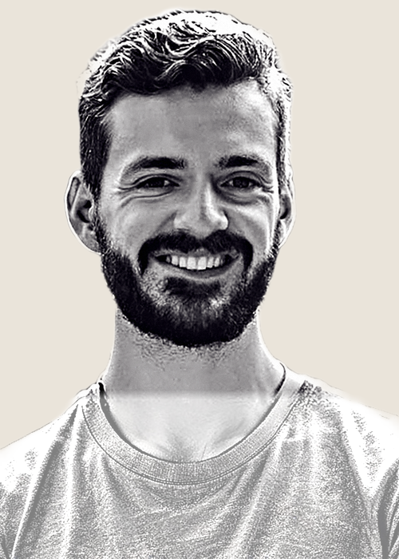
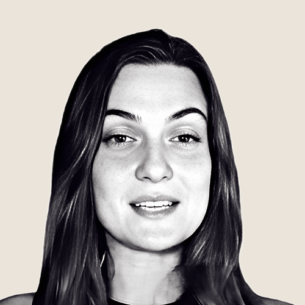

“I have received multiple unexpected new very lucrative opportunities.”Leanne Ely · Best-selling author
For David McEwen's community
Not generic frequencies. Calibrated to your energetic structure.
Generic tracks play one tone for everyone. Yours get calculated from the minute you were born.
Reveal my frequencies
David's code MCEWEN
takes 20% off at checkout
Birth signal receiverListening
Your four frequenciesinside the spectrum

“This is one that will calibrate itself to essentially your energetic structure.”
People who pressed play
“Instead of 10 paid members, I got 30 paid members in 30 days.”Jennifer K. Hill · Global Wellness Leader

“Instead of just studying your blueprint, you begin resonating with it.”Summer Phoenix · Human Design and Gene Keys Practitioner
“I feel like the person I've been trying to get back to for so long.”Amber Hedrick · Zodiac listener
“I have received multiple unexpected new very lucrative opportunities.”Leanne Ely · Best-selling author
“Instead of 10 paid members, I got 30 paid members in 30 days.”Jennifer K. Hill · Global Wellness Leader
“Instead of just studying your blueprint, you begin resonating with it.”Summer Phoenix · Human Design and Gene Keys Practitioner
“I feel like the person I've been trying to get back to for so long.”Amber Hedrick · Zodiac listener
All you have to do is listen
Listen for just 9 minutes a day.
The music does the holding. Put it on while you walk, work, cook, visualize, or drive.
9
Minutes inside music made to carry your exact frequencies.
Leave the noise
Get off the station of fear, drama, and noise without white-knuckling your mental diet.
Raise the signal
Raise your dominant vibration by listening, not forcing. The music does the holding.
Change the pattern
Stop attracting the wrong people by breaking your repeating relationship loops.
Give it a soundtrack
Your visualizations, your exact frequencies, inside real music.
Water one seed
What are you manifesting first?
Your frequencies cover four domains. Start where you want movement. You will have all four.
Opportunity · work · money · timing
Abundance
Your exchange frequency. The internal reference signal for action, exchange, and material result.
Over time, you notice openings and timing more clearly, including where your effort belongs.
Reveal my frequenciesTwelve months of listening
300 started. 278 completed.
In a 52-week study, 300 people started and 278 completed. They answered open-ended questions every two weeks while Zodiac recorded their listening.
98.6%Would recommend to a friend
84%Said it was life-changing
94%Reported deeper self-access
91%Reported sharper instincts
90%Reported better relationships and love
Among listeners who used Zodiac as designed: at least nine minutes a day on average, balanced across all four frequencies with each at 15% or more.
“Instead of 10 paid members, I got 30 paid members in 30 days. Within 45 days, we had almost 40 paid members. It felt like the floodgates of abundance, prosperity, and purpose opened.”Jennifer K. Hill · Global Wellness Leader, Founder of OptiMatch
From birth moment to music
What happens after you enter your birth details.
You are less than five minutes from seeing the exact frequencies calculated for you.
Discover your four unique frequencies in Hz.
The four frequencies that guide Identity, Love, Vitality, and Abundance are calculated using 248+ celestial data points.
Hear how each frequency sounds in music.
Each track is tuned precisely to your frequencies. Real composers. Real production. Not generic meditation drones.
Learn where your frequencies land in the spectrum.
Your four frequencies arrive in separate bands. The band changes how each frequency expresses in your pattern.
Learn how to combine frequencies.
Our research indicates that balance matters over time. You will learn how to build effective playlists for your week.
Combine listening with what you already practice.
Meditation, breathwork, yoga, chanting, Qi Gong, and prayer all quiet the noise. Zodiac adds your personal signal to the experience.
“You can know your Human Design. You can contemplate your Gene Keys. You can understand your shadow to gift pathway perfectly…But you can still feel stuck. As a practitioner, I see this all the time. Insight is powerful. But insight alone does not create integration.”Summer Phoenix · Human Design and Gene Keys Practitioner
One chart. Four directions.
How your frequencies guide you.
From your birth time and location, Zodiac calculates four distinct frequency signals.
Core
The internal reference signal for who you are and what is yours to do.
Over time, you notice what is genuinely yours and what is noise.
Love
The internal reference signal for connection within yourself and with others.
Over time, you notice what is happening between you and other people.
Vitality
The internal reference signal for energy, tension, and recovery.
Over time, you notice what deserves your energy and what drains it.
Abundance
Your exchange frequency for action, opportunity, and material result.
Over time, you notice openings and timing more clearly.
Your birth moment is already there
Experience your personalized music now.
Listen anywhere: walking, driving, cooking, working. You do not rearrange your life. The music carries you.
Reveal my frequenciesDavid's code MCEWEN takes 20% off at checkout
Before you press play
Frequently asked.
What if I do not know my exact birth time?
Your birth time affects the calculation. If you have no idea, choose 12:00 noon. Once you are a member, we will provide ways to help you find or refine it.
How does it work?
You enter your birth details. We calculate four frequencies from 248+ celestial data points, then embed those frequencies into music tuned precisely to you.
How much time does it take?
Our beta showed that listening for a minimum of nine minutes a day produced results. Many people listen longer because the music fits into ordinary life.
Play it at home. In the car. At the gym. While you work. Build playlists. Loop your favorites. Fall asleep to it.
What if I already know my chart really well?
Good. This is not about learning more information. Knowing your chart cognitively is different from living it automatically.
Will this work with my other practices?
Yes. Many listeners combine Zodiac with meditation, breathwork, yoga, chanting, Qi Gong, prayer, and manifestation.
Can I cancel anytime?
Yes. No contracts, no hassle. Cancel in the app, or email support@zodiac.fm and a real human will help.